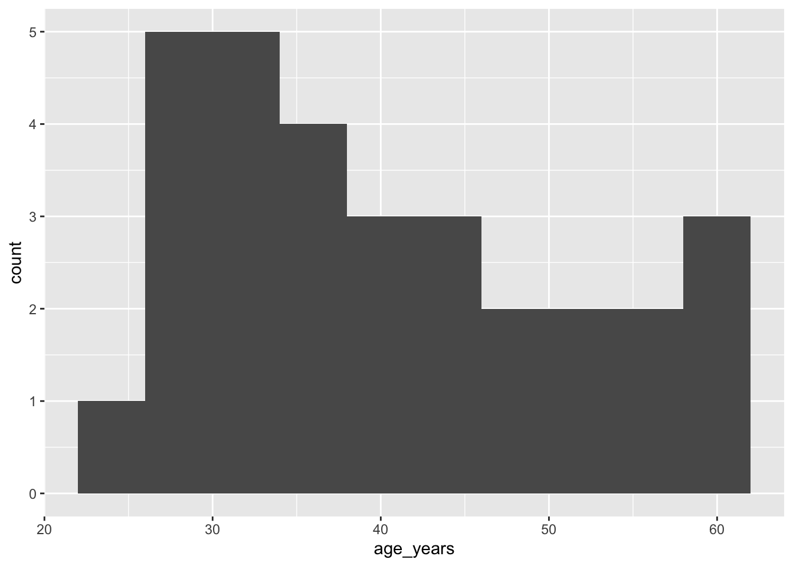

![]()
age <- runif(n = 100, min = 18, max = 65) # choose 100 random values between 18 and 65
I have been working for the past month on developing a synthetic dataset to support the clinical trial our laboratory is starting in our search for a cure for HIV. Clearly, curing HIV is an ambitious goal. Our previous clinical trials and experiments have given us confidence that our approach will move us forward.
What is a synthetic dataset? Why am I interested in such a thing?
A synthetic dataset is a set of hypothetical cases that mirror as closely as possible in silico (fancy word for on my computer) data that we are likely to collect from the real participants in our clinical trial. Synthetic datasets are useful when the process of collecting data is slow (our case) or the sample size is very restricted (as in the case of many animal model experiments where both ethics and cost limit how many animals can be sacrificed for an experimental result). In our case, we will replace our analyses conducted on the synthetic dataset with the results from the participants themselves.
The experimental protocol of any clinical trial tells us what variables will be collected. The synthetic dataset will use the same variables. Obviously, one can’t simply make the data up. However, you see exactly this frequently in texts, blog posts or statistical package manuals. The authors will show examples of data predicated on a set of normally or uniformly distributed data, such as in the following example.1
How we go about choosing data to use in a synthetic dataset requires more profound thinking for the set to be worthwhile. These values should mimic as closely as possible the real values we are likely to encounter in the clinical trial. We can only make values up out of whole cloth in a very few cases. Prior studies or trials have reported values for the variables. They may not have the same objective or deal with exactly the same population as the real sample for the trial, but we need to make them “close enough” to make the analyses based on them reasonable approximations for the real data.
Fitting a Distribution for a Numeric Variable
There are many stages to preparing a synthetic dataset. In this post, I will limit myself to how we choose the distribution to use to set the values for a numeric variable. For example, in our clinical trial, one of the variables we collect on our participants is their age in years. Our trial will be limited to adults between 18 and 65 years – a common range for clinical trials.
Our Precedent for the Age Variable
From 2017 - 2020, our lab conducted a smaller trial (30 individuals) of a similar strategy for HIV cure.2 Among the demographic variables about the participants in that trial, we recorded the age in years at the beginning of the trial.
This distribution is a good start. But, we need to check it against reality. Do the members of the artificial cohort reflect the population we are trying to measure, i.e., people living with HIV (“PLHIV”) in Brazil. For age, that means comparing the profile of the ages of participants to other analyses of this group. However, I will leave that question open here and focus on the distribution of ages to use as a model for age in the synthetic cohort for the new trial.
Here is a list and histogram of the ages of the participants in the first trial.
[1] 30 49 34 54 34 29 61 40 36 45 40 28 34 52 35 41 32 48 35 28 32 55 27 56 44
[26] 38 25 45 60 61| Age Group | Total |
|---|---|
| 20 - 30 | 6 |
| 31 - 40 | 11 |
| 41 - 50 | 6 |
| > 50 | 7 |

Distribution of the age_years Variable
The density curve of the age data appears monomodal; it has just one peak. The histogram, however, suggests that there is a second mode at the elderly end of the age spectrum. Picking a distribution that is an adequate model for projecting new cohorts of PLHIV who are likely to be enrolled in the new study is not obvious.
Intuitive Distribution Selection
The dominant mode around 30 years old suggests visually that the distribution may be normal in character. That is our intuitive first guess about the type of data in the age variable. Testing normality is relatively straightforward. We can use either the Shapiro-Wilk or the Anderson-Darling tests of normality. In both cases, if the p-value of the test is less than a value we set, by custom 0.10 for normality tests, we consider that the normal distribution does not describe the data. Let’s try those with our data.
# Shapiro-Wilk
shapiro.test(age_cure1)
Shapiro-Wilk normality test
data: age_cure1
W = 0.93228, p-value = 0.05648# Anderson-Darling
nortest::ad.test(age_cure1)
Anderson-Darling normality test
data: age_cure1
A = 0.64476, p-value = 0.08372In both these tests, the age data does not appear to be normally, even for the more liberal Anderson-Darling test.
Now, what? We can continue to test continuous distributions and hope we find one that fits the pattern of our data. That’s not very efficient and depends on our
Note on the Illustration at the Head of the Post
The diagram at the beginning of this post is a small piece of an extraordinary illustration of the relationship among a large number of statistical distributions that is the main element of an article in The American Statistician from 2008 by Leemis and McQueston, Univariate Distribution Relationships. ((Leemis and McQueston 2008)) that the first author has enshrined in a web page that explains in detail each of the distributions and how they relate one to the other (https://www.math.wm.edu/~leemis/chart/UDR/UDR.html). This is a very valuable resource for anyone who is dealing with this subject.
References
Leemis, Lawrence M, and Jacquelyn T McQueston. 2008. “Univariate Distribution Relationships.” The American Statistician 62 (1): 45–53. https://doi.org/10.1198/000313008X270448.
Footnotes
Citation
BibTeX citation:
@online{hunter2025,
author = {Hunter, James},
title = {Fitting {Distributions}},
date = {2025-08-01},
url = {https://jameshunterbr.github.io/posts/07-30-distribution-fitting/},
langid = {en}
}
For attribution, please cite this work as:
Hunter, James. 2025. “Fitting Distributions.” August 1,
2025. https://jameshunterbr.github.io/posts/07-30-distribution-fitting/.